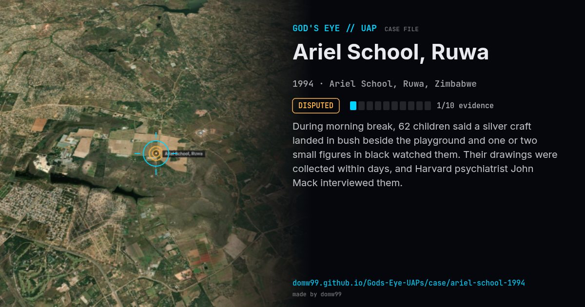

Ariel School, Ruwa
DISPUTED

During morning break, 62 children said a silver craft landed in bush beside the playground and one or two small figures in black watched them. Their drawings were collected within days, and Harvard psychiatrist John Mack interviewed them.
Explanation
Skeptics suggest mass suggestion after a meteor/re-entry seen across southern Africa two days earlier; many former pupils still stand by their accounts.
What was seen
Shape: Silver craft landing in scrub; small beings
Witnesses: 62 pupils aged 5–12
Duration: ~15 minutes